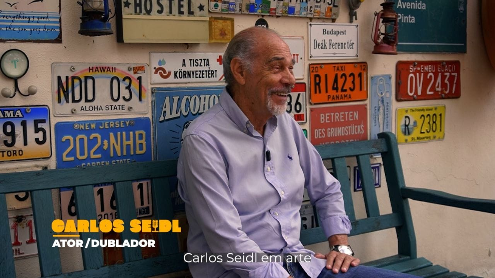

Versão Brasileira
As vozes da nossa infância · Documentário · 2026 · Assistente de direção, produtor assistente, operador de câmera e diretor de fotografia
Documentário de seis minutos sobre dublagem brasileira, publicado pela Farol Filmes. Atuei como assistente de direção, produtor assistente, operador de câmera e diretor de fotografia.
Assistir no YouTube ↗O documentário
“Versão Brasileira: As vozes da nossa infância” parte da dublagem brasileira e da memória afetiva construída por essas vozes. O filme articula conteúdo, imagem e ritmo em uma linguagem documental concisa.
Minha atuação
Atuei como assistente de direção, produtor assistente, operador de câmera e diretor de fotografia. As funções reuniram preparação e organização das gravações, apoio à produção, planejamento e execução visual no set.
Direção visual · 3D · 2026
Trailer 3D
Concebi a direção visual e a atmosfera do trailer 3D que apresenta o documentário e cuja cena também abre este portfólio. Assinei a direção de arte do ambiente, layout, composição, iluminação, animação de câmera e preparação dos renders.
A cena foi tratada como cinema: mise-en-scène, ritmo de imagem, leitura dramática do espaço e continuidade entre planos. Também conduzi a otimização técnica e o pipeline de render em Redshift.